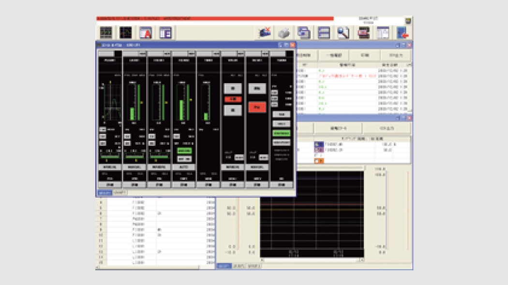

PLC engineering software (MELSEC) MELSOFT PX Developer


Consists of a programming tool and monitoring tool supporting users to process DDC on QnP(R)HCPUs. Programming work is done in FBD language (IEC 61131-3 standard). DDC processing monitor is done with tag data.

Substantial FBs (function blocks) and functions for loop control
- In addition to the process CPU's loop control instruction FBs, PX Developer has combined FBs that are easy to use.
- Basic FB/functions (logical operation, arithmetic operation, etc.) that comply with IEC61131-3 are also provided, allowing simple sequence control to be described in the FBD.
Easy to standardize and reuse programs
- PX Developer complies with the IEC61131-3 standards. Programs can be modularized (custom FB can be created). This allows for reuse in future projects requiring similar capabilities, greatly reducing development time.
Integration with sequence control programs
- Easy data exchange with ladder programs.
- Data can be exchanged between the FBD program and ladder program (created with GX Developer) using logical names (labels) instead of device memory addresses. Therefore, constants of loop control tags, SV values, etc. can be easily changed from the ladder programs.
Comprehensive tuning and monitoring functions
- The PX Developer has various screens (face plate, tuning trend, alarm, event list, etc.) used to tune, monitor, and operate the created control loop. Tuning and monitoring are available immediately after creating the program.
- Auto tuning can be used by the Step Response method or the Limit Cycle method.
Improved operability for redundant system
- Users can design the redundant system without repeating the same procedure for the control and standby systems, reducing the total setup and design time.